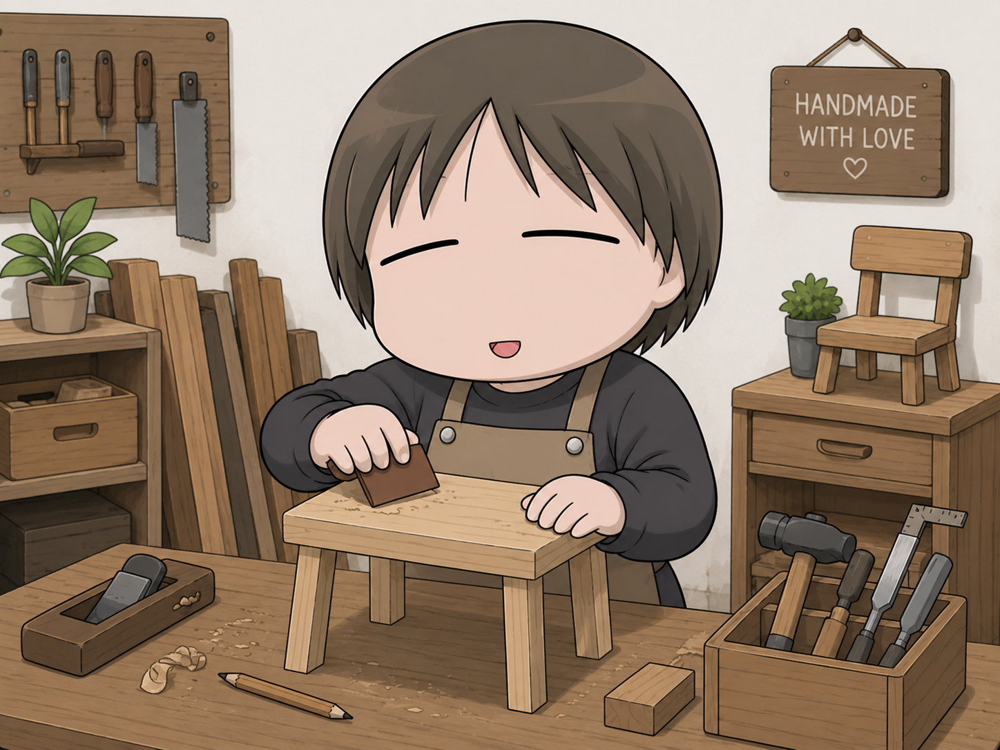
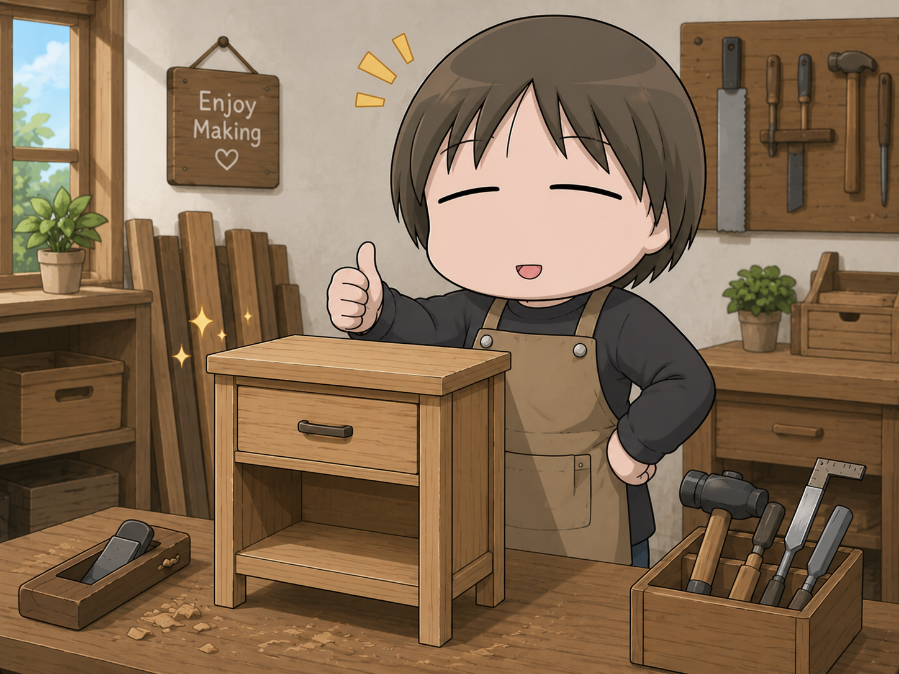

목공 작업
주말에는 직접 목재를 가공하여 테이블이나 소품을 만드는 것을 좋아합니다.


닉네임 : AI Teacher
안녕하세요. 저는 인공지능과 소프트웨어 분야를 교육하고 있는 강사입니다. 새로운 기술을 배우고 이를 교육 현장에 적용하는 것을 좋아합니다. 특히 생성형 AI와 웹 기술에 관심이 많으며, 다양한 프로젝트를 통해 실무 경험을 쌓고 있습니다.
주말에는 직접 목재를 가공하여 테이블이나 소품을 만드는 것을 좋아합니다.


새로운 지역을 방문하며 다양한 문화를 경험하는 것을 즐깁니다.
이번 수업에서는 단순히 기술을 배우는 것에 그치지 않고, 실제 업무와 프로젝트에 활용할 수 있는 수준까지 이해하는 것을 목표로 하고 있습니다. 또한 함께 학습하는 분들과 적극적으로 소통하며 서로의 경험을 공유하고 싶습니다.